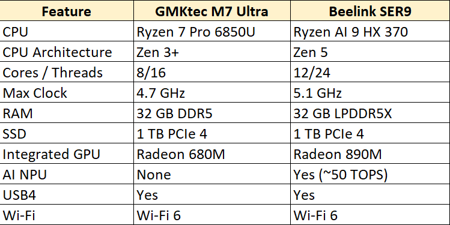

| CPU | AMD Ryzen AI 9 HX 370 |
|---|---|
| CPU Architecture | Zen 5 |
| Cores / Threads | 12 / 24 |
| Max Clock | 5.1 GHz |
| RAM | 32 GB LPDDR5X |
| SSD | 1 TB PCIe 4 |
| Integrated GPU | Radeon 890M |
| AI NPU | Yes (~50 TOPS) |
| USB4 | Yes |
| Wi-Fi | Wi-Fi 6 |
| OS | Windows 11 |
| Network | Tailscale node ai-lab-b (100.80.190.11) |
No discrete GPU — the Radeon 890M integrated graphics plus the onboard NPU are what's available for acceleration. Comfortable running 7B–9B models; 13B–14B models like Qwen2.5-Coder run fine at 4-bit quantization but slower; 30B+ would load but crawl without a dGPU to offload to.
| CPU | AMD Ryzen 7 Pro 6850U |
|---|---|
| CPU Architecture | Zen 3+ |
| Cores / Threads | 8 / 16 |
| Max Clock | 4.7 GHz |
| RAM | 32 GB DDR5 |
| SSD | 1 TB PCIe 4 |
| Integrated GPU | Radeon 680M |
| AI NPU | None |
| USB4 | Yes |
| Wi-Fi | Wi-Fi 6 |
| OS | Linux |
| Runtime | Ollama |
| Network | reachable at 10.0.0.75:11434 on Max's LAN |
No AI NPU on this board, so model acceleration relies on the CPU and the Radeon 680M integrated graphics.

For the network diagrams showing how these two boxes connect, see the Local LLM Field Guide, Chapter 10.